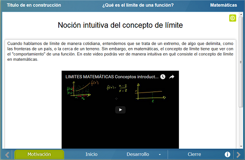
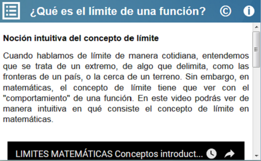
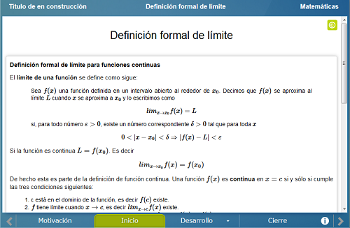
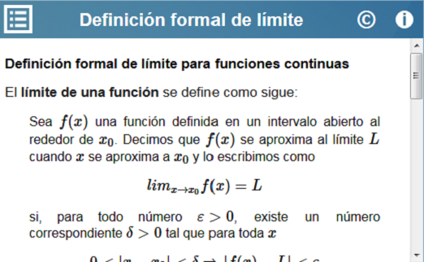
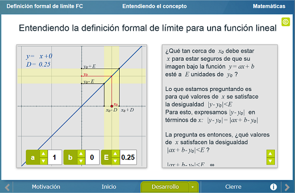
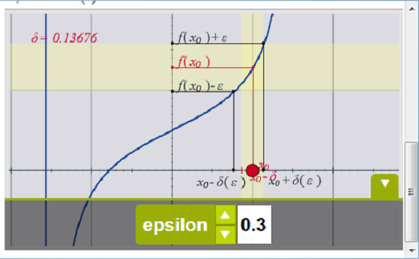
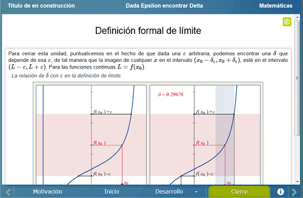
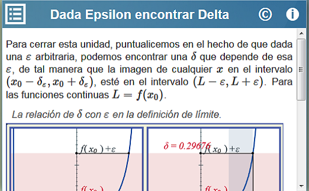

Definición formal de límite para funciones continuas
Definición formal de límite para funciones continuas
 Definición formal de límite para funciones continuas
Definición formal de límite para funciones continuas
Que el alumno comprenda la relación que hay entre epsilon y delta en la definición formal de límite para una función continua.
Se presenta un video de uso público que trata sobre la noción intuitiva del concepto de límite.


Se enuncia la definición formal de límite para una función en general y se puntualiza en la definición para una función continua.


Consta de tres escenas. En la primera se ilustra de manera interactiva la definición de límite para una función lineal por medio de su gráfica.


En la segunda escena se explica cómo debe elegirse delta para una epsilon dada, y se ilustra de manera interactiva por qué debe elegirse de esa manera por medio de la gráfica de una función continua.
En la tercera y última escena de esta sección, se dan tres ejemplos concretos de funciones continuas: una parábola, una función cúbica y una función exponencial, de manera que el usuario observe distintos casos y particularidades que se pueden presentar en la obtención de una delta dada una epsilon.
Finalmente se ilustra de manera interactiva, a través de la gráfica de una función continua, qué implica elegir una epsilon cada vez más pequeña.


| Diseño del contenido | Elsa Sirenia Vega Camacho |
| Diseño funcional | Elsa Sirenia Vega Camacho |
| Programación | Elsa Sirenia Vega Camacho |
| Asesoría de programación | Leticia Montserrat Vargas Rocha |
| Diseño gráfico | Ricardo López Gómez |
| Coordinación | Leticia Montserrat Vargas Rocha |
| Diseño funcional | Elsa Sirenia Vega Camacho |
| Programación | Elsa Sirenia Vega Camacho |
| Asesoría de programación | Leticia Montserrat Vargas Rocha |
| Diseño gráfico | Francisco Varela Fuentes |
| Coordinación | Leticia Montserrat Vargas Rocha |
| Desarrollo del contenedor | Oscar Escamilla González |
Los contenidos de esta unidad didáctica interactiva están bajo una licencia Creative Commons Reconocimiento-NoComercial-CompartirIgual.
La unidad didáctica fue creada con Arquímedes, una herramienta de código abierto.
La unidad didáctica contiene escenas elaboradas con Descartes, una herramienta de código abierto.
LITE - UnADM 2014